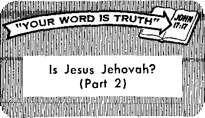

Ry llAwflk«r' correspondent in Liberia
Chasing the Wind
Tribalism and the New Africa
Those Mysterious Radionic Machines
The Political Circus
JANUARY 8. 1963
THE MISSION OF THIS JOURNAL
News sources that are able to keep you awake to the vital issues of our times must be unfettered by censorship and selfish interests. "Awake!" has no fetters. It recognizes facts, faces facts, is free to publish facts. It is not bound by political ambitions or obligations; it is unhampered by advertisers whose toes must not be trodden on; it is unprejudiced by traditional creeds. This journal keeps itself free that it may speak freely to you. But it does not obuse its freedom. It maintains integrity to truth.
"Awake!" uses the regular news channels, but Is not dependent on them. Its own correspondents are on all continents, in scores of nations. From the four corners of the earth their uncensored, on-the-scenes reports come to you through these columns. This journal’s viewpoint is not narrow, but is international. It is read in many nations, in many languages, by persons of all ages. Through its pages many fields of knowledge pass in review—government, commerce, religion, history, geography, science, social conditions, natural wonders—why, its coverage is as broad as the earth and as high as the heavens.
"Awake!" pledges itself to righteous principles, to exposing hidden foes and subtle dangers, to championing freedom for all, to comforting mourners and strengthening those disheartened by the failures of o delinquent world, reflecting sure hope for the establishment of a righteous New World.
Get acquainted with "Awake!” Keep awake by reading "Awake!”
Published Simultaneously in the United States by the WATCHTOWER BIBLE AND TRACT SOCIETY OF NEW YORK, INC. 117 Adams Street Brooklyn 1, N. Y., U. S. A.
and in England by
WATCH TOWER BIBLE Watch Tower House, The Ridgeway N. H. Knorb. President
Printing this issue; 3,700,000 4d a “Awake:1' is published in the following 25 languages: Semimonthly - Afrikaner. Chinyanja, Malawi, Dutch. English, Finnish, French, Cierman, Greek, Italian, Swahili, Norwegian. Portuguese. Spanish, Swedish. Tagalog. Zulu. Monthly ■ Cebuano-Visayan, Hiligaynon, Ilocano, Korean, Malayalam. Polish, Tamil, Ukrainian.
■ Yearly subscrliitiun rates
Offices for semimonthly editions
America, U.S., 117 Adams St, Brooklyn 1, N.Y. $1 Australia, 11 Beresford Rd., Strathflold, N.S.W,
Caiiatla, 150 Bridgi-land Ave., Toronto 11?, Ont.
England. Watcli iinarr Mouse,
New Zealand, 621 New North Bd., Auckland, S.W. 1
Sontb Africa, I'i’Jvatc Bag I' 0, Elitndsfnntein, Tvl. 70c Monthly editions coat half the ahove rates.
AND TRACT SOCIETY
London N.W. 7, England Grant Suiter. Secreiarj/
copy (Australia, 5d; South Africa, 3½c Remittances for subscriptions should he sent to (he nftloe in your country. Otherwise send your remittances Io London. Notice of expiration is sent at least two issues before subscription expires.
CHANGES OF ADDRESS should reach us thirty days before your moving date. Give us your old and new address <lf possible, your old address label). Write Watch Tower, Watch Tower House, The Ridgeway, London N.W. 7, England.
Entered as second-class matter at Brooklyn, N.Y.
Printed in England
The Bible translation used In “Awake!” Is the New World Translation of the Holy Scriptures. 1961 edition When other translations are used the following symbols will appear behind the citations;
AS—American Standard Version AT—An American Translation; AV—Authorized Version; Darby—J. N. Darby’s version
Dy—Catholic Douay version ED—The Emphatic Diaglott JP—Jewish Publication Society Le—Luther’s version
Mo • .’amen Moffatt's version Ro—J. B. Rotherham's version RS—Revised Standard Version Y—Young's version
CONTENTS
Those Mysterious Radionic Machines
Hie Roach Comes Under Suspicion
Vancouver’s Brush, with Typhoon Frieda 21
Unique Gilead School
"Your Word Is Truth”
Volume XLIV London, England, January 8, 1963 Number 1
A MARK of beauty in a person of spiritual maturity is his ability to govern himself. His power to exercise self-control over his emotions and his fleshly desires is as pleasing to see as physical beauty.
SEIF-CONTROL
By giving in to the flesh, you show that you are the slave of your fleshly desires rather than the master of them. With each failure to resist, your power of selfcontrol becomes weaker. On the other hand, with
In fact, association with him can be much more enjoyable than with a person who has physical beauty but an ugly disposition.
Saul, one of the kings of ancient Israel, was a tall and strikingly handsome man, but his ugly personality detracted from his physical beauty. It made association with him exceedingly unpleasant. On one occasion he angrily flung a spear at his own son while in a fit of uncontrolled rage. As king he was a mighty man, but anyone in his kingdom who was able to exercise self-control was a better man than he. “He that is slow to anger is better than a mighty man, and he that is controlling his spirit than the one capturing a city.”—Prov. 16:32.
Developing control over your emotions and fleshly desires rather than permitting them to control you requires a great amount of effort. Often it is necessary to put up a stupendous struggle with yourself to resist succumbing to the seemingly overpowering attraction of a fleshly temptation. Your better judgment says No to a wrong desire, but your flesh cries out Yes. each victory, your power of self-control becomes stronger.
Persons who lack self-restraint spend their lives wrestling with problems and difficulties that are of their own making. The alcoholic ruins his family relationship, his ability to earn a living as well as his health because he fails to control his desire for alcohol. The immoral person creates for himself severe emotional and marital problems and also lays himself open to contracting crippling venereal diseases because of his failure to maintain control of his passions. The glutton overtaxes his system and eventually suffers from numerous health problems because he does not keep in check his desire for tasty food. The smoker invites serious physical ailments because he lacks the will power to resist the cravings of the tobacco habit. These and many other difficulties people create for themselves by not developing selfdiscipline.
In order to exercise self-control over fleshly desires, especially when strongly tempted, you must have a solid reason for not giving in to them. It must be something you can cling to when you argue with yourself against succumbing to a wrong desire, something that says convincingly why you must not do what the flesh urges. In the matter of morals, respect for divine moral standards can be that needed anchor for the soul.
Community moral standards or knowledge of the physical harm that can be done by incontinence are not strong enough to provide a sturdy anchor to hold to when temptation is tugging at you like the pull of a powerful tide. They do not give to you the armor that is strong enough to protect you against your own weaknesses. On the other hand, respect for divinely given moral standards does provide that armor.
On one occasion the apostle Paul said: “I browbeat my body and lead it as a slave, that, after I have preached to others, I myself should not become disapproved somehow.” (1 Cor. 9:27) Paul knew the moral standards that God had given to man. They were an anchor for him when he battled fleshly desires, giving him a firm reason for resisting those desires. They helped him to exercise control over his body so that it did not succeed in making him its slave, causing him to become disapproved in the eyes of God. To maintain control of it he had to browbeat his body by being like a bully toward it. He did not physically mistreat it as do ascetics, but he had to act in an overbearing manner toward it as a master toward a slave in order to keep its desires under control.
Paul’s method can help you to exercise self-control. You too can lead your body as a slave, being the master of its desires, if you have the same respect Paul had for divine moral standards and the same concern about becoming disapproved by God. When confronted with moral temptations remember his inspired statement: “Do not be misled. Neither fornicators, nor idolaters, nor adulterers, nor men kept for unnatural purposes, nor men who lie with men, nor thieves, nor greedy persons, nor drunkards, nor revilers, nor extortioners will inherit God’s kingdom.” (1 Cor. 6:9, 10) Look at the temptations as a choice between a moment of fleshly pleasure and the loss of God’s kingdom. Which means more to you?
You must have an objective in your life that is stronger than any fleshly temptation in order to be able to resist wrong desires. Eternal life in God’s kingdom can be that objective. A keen desire for it can give you a strong incentive to win in your battle for self-control.
What you permit your mind to dwell on can contribute measurably to your strength or will power. Instead of weakening your resistance by allowing it to dwell upon a wrong desire, focus it on your objective in life and upon upbuilding things. Keep it out of the sink of moral uncleanness. —Phil. 4:8.
There is a sense of strength in the Christian who has learned to exercise self-control. It makes him an inspiration to those who know him well. Unlike King Saul, his association is upbuilding and pleasurable. In obedience to the Scriptures, he has learned how “to get possession of his own vessel in sanctification and honor,” whether it be in the matter of eating, drinking, morals, emotions or any other thing. (1 Thess. 4:4) Can you say as much for yourself? If you are able to maintain self-control under the pressure of temptation or the pressure of anger, you possess one of the distinguishing marks of beauty that bring pleasure to the eyes of God and of righteous men,
Is there any hope for world peace?
Are people misplacing their trust for realizing peace and security?
WITH nuclear-armed nations teetering on the brink of an atomic holocaust, the keenest hope of the people is for world peace. Their earnest desire is to see the nations disarm and to find peaceable means for settling their differences. For many decades efforts have been made by the nations to establish world peace, but to no avail. Now, with the very existence of civilization threatened by great stockpiles of nuclear weapons, it appears that the people have been chasing the wind in their pursuit of world peace.
In the East and the West the destructive power that has been built up is frightening to contemplate. Each has enough power to make a wasteland of the other. According to The Atlantic of September, 1962, the United States is now armed with “the equivalent of ten tons of TNT for every man, woman and child on earth.” Add to this the destructive power stockpiled by the East and it can be seen that the world has a fantastic potential for destruction. It is an awful testimony to the utter failure of man’s peace efforts.
The people who have trusted in the peace agencies of the world appear like men who might senselessly run about trying to catch the wind. Their hope and trust in human schemes for peace have come to nothing. They have reached out in hope of peace but have embraced emptiness
Nations in which they trusted have failed them. International peace conferences outside these agencies have produced nothing but disappointing results. Like the ten-tribe kingdom of ancient Israel, called Ephraim in the days of the prophet Hosea, they misplace their trust.
The people of the ten-tribe kingdom of Israel fed their hopes on help coming to them from Egypt and Assyria, but their hopes failed to materialize. It was as if they had been feeding their hopes on the emptiness of wind. Hosea pointed this out by saying: “Ephraim is feeding on wind and chasing after the east wind all day long.” (Hos. 12:1) In Palestine an east wind would be a hot, dry wind. This parching wind was like the unstable counsels and empty hopes in which the people of Israel trusted. By saying that they were chasing after the east wind, Hosea well depicted their folly of trusting in counsels and prophets that promised help from Egypt and Assyria. “Ephraim proves to be like a simple-minded dove without heart. To Egypt they have called; to Assyria they have gone.”—Hos. 7:11.
tiness. The renowned peace agencies such
There was no substance to the mouth-
as the League of Nations and the United
ings of false prophets who assured Israel
that nothing unpleasant would happen to her. Their prophecies were vain and empty, like wind. Regarding such prophets Jeremiah said: “ ‘For the house of Israel and the house of Judah have positively dealt treacherously with me,’ is the utterance of Jehovah. ‘They have denied Jehovah, and they keep saying, “He is not. And upon us no calamity will come, and no sword or famine shall we see." And the prophets themselves become a wind, and the word is not in them. That is how it will he done to them.’ " (Jer. 5:11-13) Instead of putting their trust in Egypt and Assyria, they should have heeded God’s warning and put their trust in him.
Their hopes would have had substance if they had placed them in Jehovah God rather than in the military might of worldly nations and the croakings of false prophets. They would not have experienced calamity, As Jehovah foretold, so it came to be: “A sword will certainly whirl about in [Ephraim’s] cities and make an end of his bars and devour because of their counsels." (Hos. 11:6) The sword of Assyria, in which Ephraim had hoped for help, swept through their cities, bringing destruction instead of help. That ten-tribe kingdom fell to the Assyrians and the people were taken away into captivity. Egypt also failed the trust they had placed in her. Thus Hosea’s words proved correct—they had indeed been chasing the wind.
In this twentieth century the people of Christendom are very much like the people of the ten-tribe kingdom of Israel. They too are misplacing their hope and trust for security. Like the Israelites, they are looking to worldly governments and agencies to bring them security and peace instead of looking to Jehovah. After decades of failure of these agencies to bring peace and now with the world facing the growing threat of atomic war, it should be evident to them that they have misplaced their trust, but they fail to see it.
Many religious leaders persist in looking to worldly agencies for security and peace, just as the Israelites looked to Assyria and Egypt. The New York State Council of Churches, for example, said: “We affirm our confidence in the United Nations as an instrument for world peace and urge it be supported and strengthened. Because of our Christian faith we work for the day when all nations will reject war as an instrument of international policy.”1 It is fine to hope for such a day, but working for it through worldly agencies that have a consistent record of failures is hardly the way to realize it.
As God warned the ten-tribe kingdom that he would bring disaster upon them because they had turned their backs on him and did not place their hope and trust in him, so he has warned the world of our day. It too is faced with disaster for the same reason, and, like the ten-tribe kingdom, it will reap a stormwind of destruction. “For it is wind that they keep sowing, and a stormwind is what they will reap.” (Hos. 8:7) That disaster will come, not by the hand of man, but by the hand of God. The Bible book of Revelation speaks of it as “the war of the great day of God the Almighty.” (Rev. 16:14) At that time the powers of this world will be broken and God’s kingdom will exercise uninterrupted rule of the earth. This was foretold by the prophet Daniel. “In the days of those kings the God of heaven will set up a kingdom that will never be brought to ruin. And the kingdom itself will not be passed on to any other people. It will crush and put an end to all these kingdoms, and it itself will stand to times indefinite.”—Dan. 2:44.
The war of the great day of God the Almighty will be disastrous for the present earthly system of things, just as the war God caused to come upon the ten-tribe kingdom proved to be disastrous for it. Although people may say, as did the Israelites, "no calamity will come,” it will come without fail. “ ‘Therefore keep yourselves in expectation of me,’ is the utterance of Jehovah, 'till the day of my rising up to the booty, for my judicial decision is to gather nations, for me to collect together kingdoms, in order to pour out upon them my denunciation, all my burning anger; for by the fire of my zeal all the earth will be devoured.’ ”—Zeph. 3:8.
A person’s trust should be in Jehovah God, not in men and human agencies. Jeremiah pointed this out when he said: “This is what Jehovah has said: ‘Cursed is the able-bodied man who puts his trust in earthling man and actually makes flesh his arm, and whose heart turns away from Jehovah himself. Blessed is the able-bodied man who puts his trust in Jehovah, and whose confidence Jehovah has become.’ ” —Jer. 17:5, 7.
Are not people today doing what Jeremiah said not to do when they place their hope for world peace and security in the United Nations or in worldly governments? Are they not making earthling man their trust instead of God? Jesus Christ, whom many of them claim to follow, did not do this. He did not trust in the armed might of Rome for security. He did not look to political governments to bring peace. Instead, he told his followers to pray for God’s kingdom to come and for his will to be done on earth. He directed their hope and trust to the kingdom of God. Like Jeremiah and other faithful prophets, he looked to Jehovah as man’s real help.
Good advice is given in the Psalms when we are told: “Do not put your trust in nobles, nor in the son of earthling man, to whom no salvation belongs. Happy is the one who has the God of Jacob for his help, whose hope is in Jehovah his God.” (Ps. 146:3, 5) Hezekiah did not chase the wind when he made Jehovah his help at the time Jerusalem was threatened by the Assyrians after they had destroyed the ten-tribe kingdom. He prayed: “O Jehovah our God, save us, please, out of his hand, that all the kingdoms of the earth may know that you, O Jehovah, are God alone.” (2 Ki. 19:19) Because Hezekiah trusted in him, he saved Judah from the hands of the Assyrians, whereas the ten-tribe kingdom, which did not place its trust in him, was overrun.
Trust in Jehovah is never misplaced. It is never like chasing the wind. Whatever he has promised to do, he does without fail. He has promised to bring permanent world peace by means of his kingdom, and this is certain despite the present threat to civilization that man has created. “In his days the righteous one will sprout, and the abundance of peace until the moon is no more.” (Ps. 72:7) We have the assurance of Jehovah God that whatever he purposes will be done.—Isa. 55:11.
It is most unwise for anyone today to be like the ten-tribe kingdom that chased the wind because it trusted in the arm of flesh rather than in Jehovah its God. To place hope and trust in the world’s peace agencies and peace efforts is as empty of good results as chasing the wind. Instead of hoping in the obviously ineffective peace efforts of the world, a person would be wise to trust in the kingdom of God. It will succeed in what man has failed to do.
TUBAL rule is indeed a force in Africa, constituting a problem to the many new African governments striving to maintain national unity. What is tribalism’s position to be in this new Africa? What effect has the impact of Western civilization had on it?
For centuries before the advent of white domination, Africa was ruled by tribes that were continually fighting. Much of this warfare was provoked by tribes that
TRIBALISM
Ry llAwflk«r' correspondent in Liberia
made profits out of the sale of subjugated enemies as slaves. When colonial powers took over, they drew boundary lines, but these had little effect on the African. Now new African governments have inherited European-imposed boundaries enclosing powerful tribes.
Will the new Western-indoctrinated governments be able to function democratically in the midst of tribal systems? Some fear that if powerful tribes make up political parties, civil war may eventually result among peoples who are more tribal than nationalistic in outlook. After the Congo became independent, for instance, certain tribes rejected the authority of a central government and reverted to tribal rule, and savage warfare occurred. Consequently some African leaders prefer strong one-party rule or rule by decree for at least limited periods.
In the new Africa, therefore, nationalism has been built up through anthems and flags and the fanning of desires to become strong like nations on other continents. This is reflected in the reviving of names of ancient African empires such as Mali and Ghana.
In Liberia, for 115 years an independent republic, pride in being a “Liberian” has grown rapidly in recent years among peoples of various ethnological backgrounds. Formerly, it is true, the government had to put down tribal uprisings, but peace has prevailed for several decades as proof that tribes do expand loyalties nationally under governments composed exclusively of Africans. It is the hope of some African leaders such as Dr. Kwame Nkrumah, president of Ghana, that black nationalism will melt away political and tribal barriers to form a United States of Africa.
Tribalism in Africa has been likened to a great striped umbrella under which every tribesman can find shelter. Whatever the predicament, a tribesman knows that help in keeping with tribal rules must come from fellow tribesmen. In many countries of the world the unemployed and elderly receive checks in a cold, impersonal way. In tribalism humaneness is on the person-to-person level. Although help may not always be given in the spirit of a warming love, the opportunity for it is there. Fellow feeling is thus enjoined, reminding one of the tribal Israelites, who were told: “You must not take vengeance nor have a grudge against the sons of your people; and you must love your fellow as yourself.”—Lev. 19:18.
A native caught stealing will often say he belongs to another tribe in an effort to preserve the reputation of his own tribe. The family circle is a remarkably tight
In many villages life goes on much the same as it did a century ago. The hoe is still the main farm implement. Though a great respect has been kindled for the white man’s medicine and art of healing, especially in the field of infant care and during epidemics, tribesmen contend that for certain ailments only “country medicine” prepared by native herbalists will work. Dr. George W. Harley, who spent many years in Liberia, states that in curing ninety-eight diseases, native methods are, in sixty-five instances, rational, and in thirty-three, magical.
More and more tribal peoples are appreciating the advantages of education and are sending their children to schools. In cooperation with UNESCO a program in fundamental education has been pursued in Liberia to teach villagers about disease germs, sanitation, improved house construction, crop cultivation and other things designed to raise living standards.
As a result of Western education a good many young Africans have repudiated ancient customs, such as circumcision of young girls and offering sacrifices to ancestors, and have sought to choose wives for themselves instead of accepting brides chosen and paid for by their families. In Southern Rhodesia girls are rebelling against what they call a “humiliating masculine racket,” the payment of cattle as lobola, bride price, for them as if they were mere goods and chattels.
Such insubordination to tribal law has been resented by tribal elders, and they chafe under governments that uphold the right of individual tribesmen to break away from custom. The old people bemoan the instability brought into marriages by Western influences and point out that under tribalism broken marriages were few. But tribalism continues to flourish in rural areas where life is simple, food plentiful and tribal discipline can be enforced.
Deeply rooted customs and superstitions are not easily removed, even among Africans who are nominal Christians. A Catholic priest has referred to Christianity in Africa as being only “skin deep.” In order to make it easier for natives to become Christians, some missions in Liberia have allowed polygamists to join the church and be baptized, although forbidding them to take communion. Even exceptions to this rule appear to be made.
As African nationalism has surged ahead, the religious influence of Christendom has steadily declined. Although Africa has imitated Western culture to a considerable degree, there is resistance to going all the way, and the “African personality” is coming to the fore. Certain features of tribalism, dances, costumes and certain traditions, perhaps once considered with disdain by educated Africans, are now somewhat glorified as the sacred heritage of African culture. Many sects have sprung up, distinctively African, with leaders claiming visions, power to prophesy, power to work miracles, power to heal.
Christendom’s plight in Africa is due largely to the failure of its professing Christians, both in Africa and in the Western world, to practice Christianity. Tribal peoples were told it was wrong to fight one another, but later they were asked to help the white man fight other white men. Reports from Central Africa tell of converts returning to tribal animism, the belief that animals, trees, rocks and other natural objects have indwelling spirits; some missions are closing. For every three converts made to Christianity in Africa, seven are made to Islam. As reported in the Liberian Age, Bishop Howells of Lagos recently expressed great concern over the decline of the “Christian Movement” In Nigeria during the past decade.
COMING IN THE NEXT ISSUE
• The Way to Delight God.
* These Headed the Church.
* Tell It with Pictures.
* What You Can Do About Tension.
Many present-day African officials are imbued with the spirit of building a new Africa replete with factories, hospitals, universities, highways and modern cities. The development of the new Africa in these directions depends partly on their skill and largely on the morale of the ordinary tribesman to work harder and pay more taxes. As tribal peoples in recent years have streamed into African cities, a new problem has been created, the disorder of rapid social change sometimes called Africa’s “Waking Sickness.”
City life is so different. The tribesman now works for money; his fields and animals are gone. Relatives on whom he used to depend are absent; standards, customs and laws are different. Drowned in a sea of peoples speaking different languages, he feels lost'and unimportant. The problems are different. A job and suitable living quarters are needed, and rent now has to be paid and all food purchased. Stealing and fighting bring police and jails. Gone now are the tribal elders.
Children are left behind as the wife goes out to work, and the struggling family is endangered by new diseases, tuberculosis and malnutrition. Children exposed to slum delinquency become hard to manage and lose respect for elders and tribal customs. Despairing fathers turn to drink, their patriarchal authority treated with contempt by juveniles who learn to gamble and to pick up habits of slothfulness and idleness. Girls turn to prostitution; venereal diseases increase. The news of city life reaches the ears of young men back in the villages, and soon only the old people are left to work the farms.
This social disorder is felt most acutely in large African cities that have doubled or tripled in size in little more than a decade. Sociologists refer to it as normless-ness, a kind of chaos. Describing the situation, diplomat George Kennan said;
“Wherever the authority of the past ceases to be the great and reliable reference book of human problems; wherever, above all, the experience of the father be-
Comes irrelevant to the trials and searchings of the son—-there the foundations of man's inner health and stability begin to Crumble. These, unfortunately, are the marks of an era of rapid technological and social change.”
Whether living in cities or in tribal villages, the need for Africans, as well as mankind everywhere, is a guide by which to live. This guide must set matters straight regarding how Almighty God wants man to live, regarding marriage, how to rear children and how to avoid the pitfalls of the inexperienced. That Guide is the Holy Bible. Though Christendom’s religions have failed to live by God’s Word, there is no need for the sincere African to despair. Thousands of Africans today who have declared themselves for Jehovah God and his kingdom are in fact living by that Word, having freed themselves of false religion, superstitions and magic. Despite the crosscurrents of tribalism and nationalism, they have learned to live in peace and by the high standards of conduct that God requires of true Christians.
Radionics is considered either quackery
or a mystery by many ’ J/1
persons. This is because the elabo- [/ U
rate machines used to diagnose 9 and treat disease work for some operators but not for others. Both those who call radionics quackery and those who call it a mystery point to Dr. Albert Abrams and his strange “Abrams’ Box,” said to be based on his theory that each disease has its own vibratory rate or its own radiation and that each drug possesses the same radiation as that of the disease it cures. How did this controversial machine work?
The apparatus first invented by Dr. Abrams was a complicated affair. It was connected by a metal cord to the forehead of a healthy person, whose abdomen was percussed or tapped to obtain a diagnosis of the patient’s complaint; only one drop of the patient’s blood was placed in the machine. Not that blood was necessary, since Dr. Abrams is said to have professed ability to diagnose merely from specimens of handwriting.
In time, innumerable other machines along the lines of Dr. Abrams’ device came into existence, claims for which were made that they could treat as well as diagnose disease. Those who call these devices quackery say that the machines are “scientific absurdities” and write much as D. H. Rawcliffe does in his book Illusions and Delusions of the Supernatural and the Occult:
“Such 'machines’ as Abrams' reflexophone and oscilloclast, Wigglesworth’s pathoclast and Boyd's emanometer are scientific absurdities. Wigglesworth’s model, for example, is purportedly designed to pick up the patient's 'high frequency radiations’, amplify them and transmit them back ‘in inverted phase1 as a curative measure. 'Radiations of disease’ are thus claimed to be ‘damped out’! There is no need to comment on such facile theorising. Provision is also made on this
apparatus for 'colour therapists'. The instruction manual which is sold with this apparatus reads like an adolescent’s dream of the future, and one can only suspect that these and other similar machines are constructed with the principal aim of fraudulently obtaining money from gullible or suggestible practitioners and patients. . . .
“Such machines as the above mostly rely for their ‘operation’ upon an alleged sensation of adhesion or friction felt by the palm of the hand in contact with a metal or vulcanised plate. In the case of convinced believers in the 'electronic reaction theory’ such sensations are undoubtedly subjective, being brought about through expectation and suggestion. Most professional users, however, can be properly classified as conscious frauds, and the fees charged by many of them in America and England leave no doubt of the motive behind their use." —Pp. 365-366.
A charge of fraud was brought against an inventor and manufacturer of a radionic device not long ago in a British court The plaintiff was a woman who purchased a “Delawarr radionic instrument” for the purpose of diagnosing and treating. In explaining why she had brought the case to court she said: “There are no rays and no radiation from it such as I was assured of when 1 bought it, 1 brought this case tor that reason and hope I have proved it to other people who have either bought boxes or intended to do so, I believe this box to be a fake as sincerely as Mr. de la Warr believes it to be genuine.” She claimed that the machine was not only a fraud but that she got into a “very bad state” of nerves trying to make the machine operate.
Since the trial lasted more than ten days, there were many newspaper reports on it, such as those in the London Daily Telegraph and Morning Post of June 28, 29, 30 and July 1, 6 and 19, 1960. One of these reports said concerning the machine that was brought into the courtroom: “It is claimed that illness in human beings or animals can be diagnosed and treated at long distance. The existence of ‘The Box’ in other forms has been known in this country for many years.” The news item pointed out that it was first experimented with by an American, Dr. Abrams, and that now a Radionics Association of Great Britain has been formed.
Many witnesses appeared on behalf of the defendant. One witness, a radionics practitioner in Dublin, said that he used the machine for diagnosing but that now he uses hair rather than spots of blood for diagnosing. The defendant’s wife also testified, the newspaper reporting: “She [said] she specialised in treating patients rather than in developing machines. ,.. She said that in operating the instrument she was detecting the forcefields which surrounded every living object. She tuned herself to whatever she was endeavouring to detect. The instrument was an aid to the operator, aiding him to get recognition to the thought.”
A number of doctors testified for the defense, one of them explaining his theory of how the machine works: “It is an application of Einstein’s unlfied-field theory and Eddington’s fundamental theory. The operative force is that which gives direction of light. The only name which can be given is energy, the force which passes between two masses and enables one to affect the other." Counsel for the plaintiff, crossexamining this witness, asked: “Are you a mystic?" His answer: “I am."
The judge, in deciding the case, said: “I am certainly not deciding that the box does in fact work, either in diagnosis or treatment.” He said that, whatever the merits or demerits of the radionic theory, there was one point he wanted “to put as kindly as possible.” It was this: “It is unquestionable that it [the theory] involves a good deal of exaggerated and extravagant statements about the system and people connected with it.” As to the machine, the judge declared that “nobody had suggested they knew how it works.” In fact, he said: “It does not seem to matter at all how you use it. For contact with the patient, blood could be used, hair, a signature. More remarkable of all, according to one practitioner, ‘It doesn’t matter if you have got the wrong blood. “A” could be diagnosed and treated by using “B’s" blood, providing the operator was thinking about “A." ’ ”—London Daily Telegraph and Morning Post, July 19, 1960.
The judge pointed out that he believed the defendant to be sincere and that the testimony of witnesses who apparently had success with the machine could not be ignored. The judge said the plaintiff could not make the machine work now but that in evidence she had said: “The colder the weather, the rarer the sticks.” The word “stick” described the method in which the radionic operator’s finger “stuck” on the box’s rubber bar, supposedly indicating correct diagnosis. The plaintiff also admitted: “One day the box would come alive and I would get a real stick.” The judge said this evidence was a little difficult to reconcile with her claim that she never got a stick at all. He dismissed charges against the defendant.
In his decision, according to the July 19, 1960, news report, “the Judge said it [the radionic device] was not an invention wholly of Mr. de la Warr’s. It had its ancestry, and he referred to equipment used in America and to an elastic rubbing board used by ‘some wild tribe in the Sudan.’ ” The inventor denied, however, that his idea came from a “rubbing board oracle” used by the medicine men and witch doctors of the tribes of the Sudan. Nonetheless, there is some resemblance to African-style ouija boards. According to anthropologist William Howells, in his book The Heathens: Primitive Man and Religions, there is a jungle variant of the ouija board idea, but it is restricted to yes and no. He says the African tribe, the Azandas, resort to it all the time and that it is a miniature wooden table together with another piece of wood the size of the tabletop, which is slid around by means of an upright handle. He writes:
"The juice or soft meat of a certain fruit is put on the table top, and the opposite part is moistened, put over it and pushed back and forth. Such is the quality of the juice and the two pieces of wood that the upper piece either goes on gliding smoothly over the lower, or else it sticks quite tightly so that it cannot be pushed back and forth and has to be pulled off. The worker simply asks the board a question, telling it to stick for ‘yes’ and slide for ‘no,’ It usually acts definitely, either sliding smoothly or sticking promptly and so it gives the impression that it knows what it is saying and has no doubt in its mind.”
By way of comparison, the following is a description of the way one radionic device, the Radioclast, works: “The ‘doctor,’ dipping his hands in talcum powder, begins a rhythmic stroking of the little blackplate with one hand, turning dials and knobs with the other. At a point where the controls are 'tuned in’ to the disease afflicting the patient, he is supposed to feel a resistance to his stroking, due to the effects of the ‘vibrations’ on the glass plate.”2
There is more than a reference to African ouija boards. It is often stressed that the mind of the operator is vital for success. Significant is the following news item concerning the manufacturer of the radionic device involved in the British court case: “In general, he added, he agreed with a quotation from a magazine that the whole of his work was ‘more akin to clairvoyance and telepathy and extrasensory perception than to anything else.’ ”—London Daily Telegraph and Morning Post, June 28,1960.
The facts brought out in the British trial confirm the view of many observers that radionic machines, when they work, depend upon ESP, Hence British physician Kenneth Walker writes in his book The Extra-Sensory Mind:
“Personally I regard both the methods and the results as being usually psychic in origin and as only very indirectly connected with the physical apparatus employed. ... As the clairvoyant sometimes uses a crystal for the purpose of anchoring his attention, as the soothsayers of an earlier age gazed at the entrails of a recently slain animal, so does the clairvoyant practitioner in this Age of Science require for a similar purpose an elaborate piece of machinery.”
Though it cannot be dogmatically said that all radionics practitioners are mystics, extrasensory perceivers or mediums, there is sufficient evidence to warn the Christian that the “mystery” behind radionics may well be spiritism. The “practice of spiritism,” whether for diagnosing or healing or anything else, is condemned by God’s Word, the Holy Bible.—Gal. 5:19-21; Deut. 18:9-14.
^t^JilneAAing.
WOMAN witness of Jehovah in Illinois had been a regular publisher, putting in about ten hours a month in the Kingdom ministry. Then she became ill, having difficulty with her limbs that made it hard to walk. "As time went on,” she relates, "I became hospitalized' and underwent several operations, with no improvement. I became spiritually weak also. Then one day the thought came to me about telephoning and witnessing in this manner, but that was too expensive. Finally, not knowing which way to turn, I gave up doing anything about the ministry. I went on this way for several years, not having any fellowship with the congregation, as I was now completely bedfast. Then, in 1961, Jehovah opened the way for me.
“The congregation servant, along with another brother and sister, called on me to see what could be done to aid' me—this at a time when I had just about given up all hope of seeing the new world. They encouraged me for about an hour; then we prayed and the brothers left, assuring me that I would see them again very soon. The congregation servant furnished me with some out-of-town expiration slips, and another brought me a supply of postage stamps, stationery and other writing materials. I was now ready to start writing letters, witnessing about God's kingdom to people I had never seen.
"I do not use a typewriter but write all letters by hand. Many times I am writing letters as early as six in the morning, and then it is necessary to bandage my hands during the night to keep them from swelling. Jehovah has really blessed my efforts, and now I have a six-month average of 2.6 books, 8.8 booklets, 93.1 hours, 1.3 subscriptions, 47.8 magazines, 37 back-calls and one Bible study, “I now talk of Jehovah’s kingdom to anyone who comes into the house, such as plumbers, doctors, interior decorators, insurance men or anyone who comes by. I obtain some names for writing letters from death notices in the newspaper and write encouraging letters to the survivors. I wrote one woman whose husband had just died, sending her, along with a letter, the tract Hope for the Dead. I stated that the letter brings more than sympathy; it brings a message from Jehovah God, who is the Source of life. In a few weeks I received a letter from this woman’s son telling me how much his mother and he had appreciated my letter; it said in part:
" 'You do not know me nor do you know my mother, yet several days ago we received your extremely kind, thoughtful and helpful letter concerning the death of my father. In any event, though I do not know how you became aware of my father's passing, we both want you to know how grateful we are for your kindness. It takes considerable time to write a letter by hand and it can become quite tiring, I understand this and am even more grateful. It was most considerate of you to take that time to offer help to people you don’t even know. Though you did not mention any financial matters, I would be very happy if you would please accept this very small offering [of $5] to your place of worship. Again, thank you very much. You are most certainly a kind and thoughtful person,’
“I immediately sent him a subscription for both The Watchtower and Awake’, along with a 'back-call’ letter. Again I received a kind acknowledgment from the man, who wrote: ‘I would like to tell you that I most certainly have been receiving your magazines and have enjoyed them very mueh. ... I know how long it takes to write a letter by hand and it can often be quite tiring. This, as well as the contents of your letter, impressed me very deeply and I am most grateful. I want to tell you that I think your work, the time and effort you spend and your thoughtfulness are wonderful expressions of true and genuine love. Again, many, many thanks.’
“Even though I am bedfast, I am a happy person, serving the happy God, Jehovah.”
This Witness increased her happiness by vacation pioneering in a recent month. This was made possible in part by the brothers who contributed toward her writing supplies, one brother bringing her three large boxes of envelopes. Her ministerial report for the month she vacation pioneered was 144 hours, 134 magazines, 7 books, 21 booklets, 55 back-calls and one Bible study. Her being alert to every opportunity, along with the kind cooperation of the brothers, has made it possible for her to do much more Kingdom witnessing than the ten hours she averaged before her disability.
Other candidates, Kennedy back-slapped and pumped the hands of factory workers. In Michigan George Romney rode comic animals, slid down a fireman’s pole, peeled potatoes and tried to shake hands with everyone he met on the street. With brass bands, searchlights, pretty girls, stirring rallies and blaring sound cars, the candidates did their utmost to attract public attention to themselves.
Because many of the things the candidates
WITH outstretched hands and toothy smiles candidates in the recent American elections mingled with the common people for several weeks before the election day of November 6, making a grand effort to woo their support. Across the nation they put on an eye-catching and ear-filling show that reminded some observers of a three-ring circus.
The candidates went through all the traditional antics to catch attention. Some were photographed with Indians and others with bathing beauties or factory workers. Rotund Mike DiSalle of Ohio was shown running with a football on a playground among children dressed in football clothes. Evan Huffman of Iowa was photographed on water skis and Claude Pepper of Florida was shown trying to shake hands with a bathing beauty as she sped past on water skis. In California Richard Nixon and Edmund Brown hugged and kissed babies, toured canneries and visited factories, shaking hands with everyone. Brown danced a Mexican square dance while, on the other side of the nation, Ted Kennedy, the president’s younger brother, danced an Irish jig. Like the others, they would not normally be done by them, they created a false image of themselves in the public eye. Although some are millionaires who are far above the average person on the social ladder, they tried to create among the common people the impression that they are one of them. They knew that people are more likely to vote for a candidate who is of their kind and experiences their problems. Such efforts to create a false public image is a common practice in politics.
The public received a brief glimpse behind the smiling masks of Mike DiSalle and Richard Nixon when they expressed their bitterness over losing the elections. DiSalle issued a vituperative statement against the newspapers that opposed him and an angry denunciation of his victorious opponent. Richard Nixon also spoke acidly of his opponent and denounced the press. Regarding him the New York Times stated: “What was most obvious about Nixon, particularly to the press, . . . was his preoccupation with the machinery of politics. Everything seemed to be contrived, even the appearance of naturalness. ... He seemed bold and elaborately objective in public, but in private seemed less composed, even uneasy and disturbingly introspective. This was the root of his trouble with the reporters: not that they were refusing to report what he said but that they were insisting on reporting all the rest of the picture—not only the words but the techniques, not only the public posture but the private posture, not only the lines of the play but the elaborate stage directions.”
At stake in the elections were thirty-nine seats in the Senate, thirty-five governorships, 435 seats in the House of Representatives and various state offices. With candidates from the two major parties contending for these offices, the outcome of the elections was certain to have a significant effect on the influence each party would have on the national picture.
Usually these elections in the middle of the four-year presidential term cause a loss of congressional seats for the party in power. That makes it difficult for the president to get through Congress the bills he wants passed. Eisenhower had this problem when he had to work with a Congress that was predominantly Democratic. Some persons consider this a good thing, as it acts as a check on the president. Thus far President Kennedy has not had to face a Congress dominated by the opposite party.
Both the House of Representatives and the Senate had more Democrats than Republicans before the midterm elections began, and President Kennedy was anxious to increase this advantage to his party. Eisenhower took him to task for this, saying, in a political speech favoring Republican candidate Nixon; ‘‘What does he want? One party government?” While Eisenhower was president, he campaigned for a Republican Congress in 1958. He wanted the same kind of advantage Kennedy was seeking.
If the Democrats could maintain their position in Congress or strengthen it, Kennedy could take that as voter support for his administration. It might also be considered as a sign pointing to victory for him when he runs for a second term in 1964.
For the Republicans, these elections will be a strong factor in their selection of a candidate to run against President Kennedy. The Republican candidate that comes out strong in these midterm elections stands a good chance of being their champion in 1964. It was, therefore, with keen interest that both parties waited for the results.
This election ran true to the customary form of politics. What that form is was described by a Republican candidate who said, as reported by the New York Times of October 19, 1962: “The general rule in politics has become deals, graft, corruption, payoffs, bribes, expedient actions, immoral actions, petty conceits, conniving, bargaining, slanders, character assassinations and even libels.”
Gubernatorial candidates in Pennsylvania heaped abuse upon one another in one of the State’s most savage campaigns. William Scranton accused his opponent of the rawest kind of hypocrisy and the boldest of lies in accusing him of racial and religious prejudice. He also charged that Dilworth “fought tooth and nail to protect grafters and corrupters.”
In California, Nixon was accused by the Democratic state chairman of condoning the dirtiest gubernatorial campaign in the recent history of California. He was charged with using faked photographs of his opponent, Edmund Brown, to support his charge that Brown was soft on communism. The Democrats, on the other hand, started a whispering campaign that made bad implications about a loan to Nixon’s brother. Both of these character-damaging devices—faked photographs and whispering campaigns—are familiar instruments in politics.
In New York, Nelson Rockefeller charged that his opponent had “contempt for plain facts and simple truths.’’ Candidate Senator Jacob Javits, also of New York, said that he was “always amazed at the limits to which some candidates will go ... by making reckless charges both unprincipled and unsubstantiated.” Senator Homer Capehart of Indiana flatly accused his opponent of calling him a liar. On one occasion, when flushed with anger, he grasped Birch Bayh by the lapels of his coat, but an onlooker rushed up to prevent a fight between the candidates.
Boston politician Charles Lanello did not feel abashed about running for reelection although he was in jail serving a sentence of one year for larceny. Another Massachusetts candidate who had been behind bars was Thomas Lane. He served a prison sentence of four months for income-tax evasion.
Before the election took place, Republicans in Chicago claimed that they had found hundreds of “ghost voters.” These are names of dead persons or persons with false addresses. This is a political stunt of long standing.
Former President Eisenhower stomped vigorously in behalf of Republican candidates, and President Kennedy campaigned with equal vigor for Democratic candidates. It seemed as if both were running for election. The intense campaigning of these two national figures gave these midterm elections special distinction.
Kennedy flew about the country, attending rallies and giving speeches. When he came to Baltimore, the largest political crowd in the history of that city gave him a rousing greeting. He did not overlook his young brother who was running for the Senate in Massachusetts. His support and prestige as president was thrown behind this political neophyte. Because of his family tie with President Kennedy, it was with good reason that Teddy told the voters that he had “a voice that will be heard in Washington.” Many people found this distasteful, as it smacked of nepotism. Commenting on it, Time magazine of September 28, 1962, spoke of a “fretful feeling that there are too many Kennedys doing too many things too conspicuously and achieving too much power.”
When President Kennedy arrived in Indiana to lend support to Democratic candidate Birch Bayh, Jr., he made a sharp attack on the Republican candidate, Senator Homer Capehart For some time Cape-hart had been urging a blockade or armed invasion of Cuba. Criticizing this, Kennedy said: “This is no time for rash and irresponsible talk. 'This is the time for men who talk softly and carry a big stick.” He went on to praise candidate Bayh as a man who would never join “those selfappointed generals and admirals who want to send someone else’s son to war.” A week or so later Kennedy made his momentous announcement to the nation of the Cuban blockade. Some Republicans accused him of timing the blockade to win voter support for the Democrats in the elections.
On November 6, 1962, fifty million voters turned out to cast their votes. This number of voters is considered good for a midterm election. In many respects the results were surprising, although no decisive change in the position of either party was made and no clear trend was indicated.
Contrary to what was expected, the Democrats held down their loss of power in Congress. This was a reversal of what usually happens to the party in power. By gaining four seats in the Senate, the Democrats increased their numerical advantage over the Republicans there by approximately two to one. Small as the gain was, the fact that the Democrats made it instead of losing seats was considered a personal victory for President Kennedy.
Offsetting to some extent their gain of four seats in the Senate are the four seats they lost in the House of Representatives. Since there will be two seats less in the 88th Congress, this loss meant a gain of only two seats for the Republicans. Being one of the smallest losses in the House by the party in power since 1934, this too was taken as a victory for the Democrats.
Although there was a draw by the two parties in the number of governorships, each gaining and losing six, the Republicans are viewed as the party that came out on top in the gubernatorial races. They won the big industrial states of New York, Pennsylvania, Michigan and Ohio.
The shadow of the coming presidential elections in 1964 was cast over these midterm elections. How some of the candidates fared now would determine their prospects then. Nixon’s loss, for example, definitely puts him out of the presidential race. Rockefeller, on the other hand, is a strong Republican contender in view of his reelection as governor of New York State. The victories of George Romney, William Scranton, Mark Hatfield and Robert Taft put their names well up on the list as possible Republican candidates for high offices in 1964.
Ticket splitting produced strange combinations of a Democratic governor and a Republican senator or a Republican governor and a Democratic senator. Pennsylvania, Ohio and Oklahoma elected Republican governors but Democratic senators. In Michigan, Republican George Romney was made the head of a state administration that has Democrats in all the other elective offices. The opposite is the case in Iowa, where Governor Harold Hughes is a Democrat surrounded with Republican officials.
A big surprise was the election of a Democratic governor in Vermont, the first in 108 years. Equally astonishing was the Republican victory in Oklahoma, where their candidate became the first Republican governor in the history of that state.
Notable successes were had by Negro candidates. For the first time in fifty years a Negro was elected to the state Senate of Georgia. There were also some firsts for Negroes in Massachusetts and Connecticut, where members of their race were elected to state offices for the first time. In California, a Negro won the distinction of being the first Negro west of the Mississippi to win a seat in the United States House of Representatives. These are only a few of the surprising results of this midterm election.
Like previous elections, this one revealed the seamy side of politics and how unprincipled candidates can become. Viewing this, a person might well be inclined to question the wisdom of becoming morally responsible for putting such men in office. But now that the show is over the political parties will begin laying plank and forming strategy for the greater show in 1964,
BORTUNATELY most cockroaches prefer to live outdoors and feed on vegetation or organic debris, so that less than one percent of roach species are pests to men. But the less-than-one percent that do not mind taking up residence in buildings can multiply fantastically. Pest-control men not long ago fumigated a four-room apartment in Texas and swept out an estimated 125,000 cockroaches!
Over the years these pesty roaches, with few exceptions, have been exempt from blame for specific outbreaks of disease. But in the last four or five years in particular a number of authorities have indicted the cockroach as a possible disease carrier. Say Drs. Louis M. Roth and Edwin R. Willis, formerly of the United States Army Quartermaster Research Center: “There is no question about the ability of cockroaches to carry pathogens in or about their bodies." Their report, published by the Smithsonian Institution, points out that some of the common species have been captured in sewers, cesspools and septic tanks and have been found traveling from these haunts into buildings, where they may enter kitchens.
What diseases has the cockroach been suspected of transmitting? Tuberculosis, cholera, typhoid and intestinal disorders are some of the human diseases. Roaches are also under suspicion for transferring polio viruses to human food. The above-mentioned report said that cockroaches may naturally harbor four strains of poliomyelitis virus. It also pointed out that roaches can harbor about forty species of pathogenic bacteria, the eggs of seven species of pathogenic worms and three species of Protozoa pathogenic to man.
Now the pesty roach comes under suspicion for transmitting infectious hepatitis. The Medical World News magazine of June 8, 1962, told of the findings of entomologist Dr. I. Barry Tarshls, whose suspicions come from the result of cockroach-control studies at a Long Beach, California, housing project:
"The 712-unit project, which was found to have roach infestation in 95 percent of its apartments, had been a focus of hepatitis: in 1959, 32 per cent of its residents suffered from the disease. About that time, Dr. Tarshis instituted a successful cockroach-control program in the project. During the following two years, infectious hepatitis incidence dropped to 3 per cent, while during the same period hepatitis cases in surrounding Los Angeles County more than doubled. It has been shown that cockroaches can be infected with polio and several other viruses, Dr. Tarshis points out. It is 'highly probable’ that the insects can also be infected with, and become a carrier of, the infectious hepatitis virus.”
Suspicion
Whether the suspicions will be definitely confirmed or not, the pesty roaches do roam over garbage and other debris with no discrimination and they may then wander about kitchens during the night. So the roach may be leaving behind, not only an unpleasant odor, but also disease. There is good enough reason, then, to employ reasonable methods of control and sanitation.
Roaches are commonly supposed to live only in dirty surroundings, but this is not the case. They will live in all kinds of buildings, clean or dirty; and they consume all kinds of human food as well as animal and vegetable substances, even tidbits such as leather, paint, paper, paste in book bindings, shoes and other insects. Once they take up residence in a building, mere cleanliness is not enough to get rid of them; poison must be used. Poor sanitary conditions, of course, make a building more susceptible to a roach invasion.
The German roach or Croton Bug is one of the most serious of the household pests, and has now been carried by commerce to almost ail parts of the world. Pest-control men find that this roach, so wary and swift, is one of their worst problems.
Many products are now on the market for controlling roaches, some of which must be used carefully because of toxic effects to man. It is likely that no small number of apartment dwellers find the battle an unending one, because their neighbors may not employ effective methods of control, if any. And as the scientists said in the report published by the Smithsonian Institution: “Cockroaches are tough, resilient insects with amazing endurance and ability to recover rapidly from almost complete extermination. . . , But, as in all battles, recognition of a common enemy is essential to successful combat.”
FRIEDA was born in
the general area of
the Caroline Islands 1,900 south of Wake Island in the Pacific Ocean. She was only a day old when she started a lazy and leisurely trip toward the shores of North America. At the age of three days she really began to feel her strength. At the age of four she was a monster of power and destructiveness, and before the fifth day she was dead. But her short life cost many human lives, much suffering and damage running into the hundreds of millions of dollars. Without even as much as a nod at Port of Entry officials, she roared in over the northern California coast near San Francisco. She crashed her way through Oregon with winds of 160 to 170 miles per hour, lashed Washington with 100-mile-an-hour force and finally ripped through the lower British Columbia mainland, including Vancouver and Victoria, with winds howling at seventy to ninety miles per hour. Our acquaintance with Frieda was only a passing one, but it will long be remembered.
On Thursday, October 11, Vancouver and area was raked by sixty-mile-an-hour winds from what was termed an ordinary Pacific storm. The result was numerous power failures as wind and falling trees snapped power lines. Hundreds of trees were felled and many TV antennae stood at rakish angles when daylight broke. Small boats in harbors were torn from their moorings and capsized. Some store windows were blown in and in many areas traffic lights were out of commission. One man was electrocuted by stepping on a “hot” wire. The darkness of the night was intermittently broken by brilliant flashes from the breaking hydro lines. The next
VANCO UVER SI
4.
morning work crews were out repairing damage, with little thought of what was ahead of them within the next twenty-four hours.
“Awake!* Correspondent in Canada
with light, warm indicated that the
The early hours of Friday evening were balmy and pleasant, rain falling. Nothing next few hours would be turned into a nightmare of raging elements. Hardly had lights begun to blink out from bedroom windows, when lashing winds announced the storm’s arrival. Above its noise, unusual sounds began to be heard as homes were bombarded with flying objects. Crashing glass told of picture windows bursting from wind pressure, giving Frieda’s pelting rain easy access to homes of unwilling hosts. Rooftops took on a brushcut appearance as shingles stood on end, until a final tug of the gale completed the barbering operation and sheared roof after roof bald of covering. Brilliant flashes of blue, green and pinkish lights illuminated the sky as hydro lines broke and transformers exploded in showers of fireworks, followed by another area of the city blacking out.
The traffic on some streets was like rush hour by 11:30 p.m., no doubt due to police re-routing cars from areas of fallen trees and “hot” power lines. Over the air, the lone radio station that continued operating on greatly reduced power issued bulletins every few minutes: “Take your children into the basement of your homes!” “Don’t go outside!” “Don’t stand in front of a window!” “If a power line falls on your car, don’t move—stay in your car until hydro, men or police get to you!” In spite of these warnings eight lives were lost in the British Columbia lower mainland, with a final total of forty-eight for the coast from California to British Columbia.
The Province, a Vancouver newspaper, the next day described the storm as “a monster scythe” that “left a trail of destruction that staggered the imagination of men trained to deal with disasters.” Nowhere did this prove to be more true than in the many once-beautiful parks of Greater Vancouver. World famous Stanley Park took the brunt of Frieda’s fury as winds reached their peak velocity. The causeway approach to the Lion’s Gate suspension bridge was closed to traffic shortly after the storm began when giant Douglas firs came crashing down on the roadway. One fell on a car, crushing an occupant to death. An ambulance became trapped trying to reach the scene of this accident when other large trees were felled across the route behind it. Lion’s Gate bridge itself swayed so much that the signalman at the center of the bridge deemed it best to leave his post until the winds decreased. Near the zoo, a 500-year-old Douglas fir was pulled out by its roots and narrowly missed some of the animals. The Vancouver Sun described the havoc: “The park is a sight to shock any Vancouverite as the 1,000-acre peninsula lies beneath tons of splintered wood.”
Daylight came with a few fluffy clouds moving lazily across the sky ahead of a light cool breeze. Normal pleasant Vancouver weather had returned as Frieda uttered her dying gasps over northern Vancouver Island and the Cariboo country. Now for the reckoning! Bleary-eyed householders woke late Saturday morning in cold houses with no lights or power to make even a cheering cup of coffee. Homes with fireplaces fared a little better. Transistor radios picked up news bulletins, which painted a dreary picture of the aftermath of Frieda’s wild spree. Morning news reports carried a police warning, for all people who did not need to go out, to stay at home, because of the danger still existing from tangled wires strewn around on city streets and the danger of more trees falling. Children in particular were warned to stay off the streets. Confirming this danger were black lines hurned into lawns and boulevards from broken high-voltage lines.
Downtown Vancouver was strangely quiet, with the few stores that were open for business lighted by sputtering candles. About twenty windows were gaping holes on the top three floors of a large department store in the center of the city. Signs were blown down and others had the neon tubes broken off from being hit by flying debris. Many large billboards were just a mass of shattered wood and torn paper. A radio announcement said: “The damage to small boats at various marinas is inestimable.” Large and small store owners were frantically trying to save their stocks of frozen foods because the B.C. Hydro Authority had stated it would likely be days before power could be restored to some areas. The only businessmen with real smiles on their faces were the lumber and shingle merchants as they called in extra staff to handle the block-long lineups of people trying to get covering for their damaged roofs. Insurance company switchboards were flooded with calls, so the stock answer given many worried homeowners was: “Get the damage repaired and send us the bills.” Saturday afternoon and all day Sunday in the hardest-hit sections a person was just not in style if he was anyplace else but up on a rooftop doing either temporary or permanent repairs to bald spots.
Some homes suffered much more serious damage from giant trees being toppled onto roofs. Two houses seen by the writer were damaged in this manner, one having a huge dent in its side and roof and the other having its roof reshaped with a Japanese-pagoda effect. At the airport eighteen aircraft were wrecked by being torn from their moorings and then colliding with other machines, or were picked up as if by giant hands and hurled to the ground, broken and crushed. One church had its seventy-foot spire nose-dive into the main sanctuary. Golf courses came in for their share of Frieda’s spite. Ardent golfers who were not busy repairing homes found many extra hazards on the courses Saturday afternoon. The Vancouver Golf Club at Burquitlam suffered a major disaster, with about 1,500 trees down on the fairways. A picture in the Vancouver Sun was captioned: “A chain saw in the golf bag would help here.”
A week later the tremendous clean-up job was still in progress. Extra work crews were clearing city streets of broken trees and other debris. Logging operations were under way in Stanley Park to clear out the 3,000 or more trees that Frieda, like an expert logger, felled in huge swaths. Power and telephone men were still climbing poles and gradually restoring these systems to useful order. Shingle mills worked overtime to fill orders as roofers struggled to keep up with the demand for their services. Already the total calculated loss topped the $11 million mark but did not include the losses suffered by many homeowners in damage to TV antennae, broken windows, toppled chimneys and frozen foods that thawed out while electric freezers were out of commission.
Thus Vancouverites, although they welcome most visitors to this area of natural beauties, are hoping that the next visitor of Frieda’s type will give the city and its environs a very wide berth.
"fka (jiving -Qdvica
• Sometimes good advice is not pleasant to take. Over a hundred years ago an American geologist by the name of James Percival (1795-1856) offered some helpful thoughts to counselors on the art of giving advice: "Advice and reprehension require the utmost delicacy; painful truths should be delivered in the softest terms, and expressed no farther than is necessary to produce their due effect. A courteous man will mix what is conciliating with what is offensive; praise with censure; deference and respect with the authority of admonition, su far as can be done in consistence with probity and honor. The mind revolts against all censorian power which displays pride or pleasure in finding fault; but advice, divested of the harshness, and yet retaining the honest warmth of truth, is like honey put round the brim of a vessel full of wormwood. -Even this, however, is sometimes insufficient to conceal the bitterness of the draught.”—New Dictionary of Thoughts, page 9.
UNIQUE GILEAD SCHOOL GRADUATES 37th CLASS
AMONG missionary schools there is one that is unique. It is the Watch Tower Bible School of Gilead, located at the international headquarters of the Watch Tower Society in Brooklyn, N.Y. Students are brought to it from the four corners of the globe; they have their way paid to and from the school; they are charged no tuition and have even board and room provided, as well as a stipend of $14 a month for incidental expenses. The purpose of the school is to train ministers to be better teachers and overseers, mainly in the lands from which they have come.
The course, which runs for ten months, features the finest training in Bible research, in field ministry, in overseership of congregations and larger bodies of Christians and in organizational procedure. In it stress is placed on the students’ bringing forth the fruitage of God’s holy spirit and in particular faith and love. They are taught Bible principles and how to apply them to the daily problems of life. The teaching is done primarily by four full-time instructors as well as upward of a score of other lecturers, ministers specially qualified in their respective fields. Students also receive training in the operation of branch offices, printing plants and Bethel homes. Educational motion pictures are a regular feature. The student schedule is a heavy one, the equivalent of eleven hours daily, six days a week. On Sundays they engage in the house-to-house ministry and attend congregational meetings the same as do all other witnesses of Jehovah.
Gilead School, which opened up in the midst of World War II, graduated its first class on Wednesday, June 23, 1943. Its most recent class graduated Monday, November 26,1962.
Even as this school is unique in the provisions it makes for its students and the kind of training it gives them, so it is in its graduations, which are presently held at the headquarters Kingdom Hall, which is always beautifully decorated with flowers for the occasion.
The program began at 3:30 p.m., and as befits a religious graduation it was opened by the singing of a Kingdom song and the offering of a prayer, by Lloyd Barry, supervisor of the Watch Tower Society’s Far Eastern Zone as well as of the Japanese branch. The main feature was a discourse by the President, N. H. Knorr, on the subject “Qualified to Teach.” Earnestly, powerfully and yet kindly he made his points. He began by noting that the purpose in taking in Scriptural knowledge should not be a selfish but an unselfish one, that of becoming qualified to teach others. In discussing his subject he pointed out that Jesus Christ and the apostle Paul were humble, mild, loving, kind and patient, that they taught in simple, easy-to-understand terms and did not try to coerce anyone. Among other things he highlighted the need of faith, the importance of prayer and in particular that all should pray God to make them do his will. —1 Tim. 3:1; 2 Tim. 2:24; Ps. 25:4, 5, 9.
After his talk he gave the 103 students, who had come from 50 different lands, their assignments, one by one; they were being sent to 64 different lands to serve in a great variety of capacities. Then one of the graduating class read a Resolution, which had previously been adopted by the class, in which they expressed their appreciation to their Creator, Jehovah God, his Son, Jesus Christ, God’s visible organization as well as to all the Witnesses whose contributions made possible their receiving this training, and they resolve never to violate their loyalty to Jehovah God and his organization.
The discourse by the President was preceded by a series of short talks. First to be heard were the four Gilead instructors: Fred Rusk, Harry Peloyan, Ulysses Glass and Registrar Edward Dunlap. Among the points these drove home in their parting counsel to the students were the following: Keep your love strong for the “house” of Jehovah (Ps. 27:4), and exercise care never to do anything that would require you to be removed from your service at this house. Like the apostle Paul it is your privilege to serve as sharp and durable spearheads in spreading pure worship. Let your ministry be marked by unity and brotherly love, being not forgetful hearers but doers of God’s Word. Bear in mind the importance of joy and cultivate it by prayer, service and interest in others. —Phil. 4:4-7.
These fine words of counsel were followed by the reading and acknowledging of the many telegrams, from some fifty different countries and representing six continents. Then Max Larson, overseer of the Society’s printing plants in Brooklyn, spoke briefly. He urged the students to continue to improve their ministry, make use of the training they had received and use the principles learned in training others. George Couch, overseer of the Brooklyn Bethel home, also gave farewell admonition. He reminded the students that Jehovah God as the Potter is accepting human creatures that are willing to let him mold them as a lump of clay is fashioned at the wheel, then polished and baked to make a useful vessel.—Isa. 64:8.
And, then, just before the main discourse of the afternoon, the vice-president of the Society, F. W. Franz, gave striking and wise counsel, basing his remarks on 1 Timothy 6:20 and 2 Timothy 1:12-14. The students had received a trust, a deposit, as it were, from Jehovah God, and the question was, Would they hold on to it? What is this deposit, this trust? Why “the pattern of healthful words,” all the fine instruction that the students had ever received and especially that which they had gained during the past ten months. Now it was up to them to keep adding to this deposit of healthful words by regular study and faithful ministry, keeping close guard over it, that it be never crowded out of their minds and lives by “empty speeches that violate what is holy,” be such speeches inducements to sexual immorality, nationalism, racism or something else. In conclusion he urged them to have confidence in the organization and to give the organization reason for having confidence in them.
After the afternoon’s program, which lasted from 3:30 to 5:45, and at which upward of 725 were present, a fine farewell dinner was enjoyed by all, and then at 7:30 the evening’s program began. First came the week’s Watchtower lesson, “Take Courage-—God’s Kingdom Is at Hand!” in which forty of the students gave previously prepared comments that were greatly appreciated by all.
For the last part of the program upward of forty students gave expressions of appreciation for benefits received at the school, told of experiences or made observations on the teaching program, which showed both great originality and a keen sense of humor. Perhaps most outstanding of all was the tableau presented by the African students, acted out in full costume and showing just how missionaries preach the good news to a tribal chief sitting in state with his umbrella man and by means of an interpreter. The program closed at 11:30 with song and a prayer by the President. Thus ended a unique graduation program of a unique missionary school.
Thirty-seventh Graduating
Class of the Watchtower Bible School of Gilead
it.
Left to right: Front row: Shanab, G., Sosa, P., Keeble, B., Ayers, A., Strong, M., Bockaert, D., Clements, M., Loh, M., Hartsten, B., Adria, M., Bayonne, A. Second row: Enevoldsen, J., Crawford, C., Charuk, J., Nti, K., Elias, N., Kunz, L.. Lunkenheimer, O., Konstanty, W., Aigner, F., Kees, M., Dauchot, C., Armale, C. Third row: Enevoldsen, G., Bockaert, J., Clements, L., Klenk, H., Robbins, C., Kwakye, A., Dower, L., Donaldson, W., Guzman, C., Bangle, A., Mayer, M.. Fry, J. Fourth row: Mills, M., Hansen, J., Wilson, J., McLean, J., Henschel, H., Gregory, A., Nielsen, A., Chae, S., McLain, B., Kronvold, K., Ayala, J., Gannaway, K., Thew, M. Fifth row: Harvey, E., Canty, C., Lukuc, F., Teller, M., Bonno, A., Kushnir, J., Turnbull, D., Hartung, K.L., McLean, D., Parkin, R., Johansen, J., Johnson, B. Sixth row: Thebaud, G., Yeatts, M., Dara wan, D., Tharp, A., Powers, J., Thompson, A., Pearce, E., Nestorides, N., McDonald, A., Kasten, M., Gregory, E., Carlson. E., Hopkinson, D., Engelkamp, R. Seventh row: Johnstone, A., Msinga, B., Buschbeck, G., Rees, P., Kunz, G., Fink-beiner, R., Schemmel, J., Preble, M., Palliser, P., Muller, C., Morrison, D., Matthews, A., Hartsten, R., Adria, S. Eighth row: Hewson, A., Arnett, D., Bowen, K., Castaneda, R., Taylor, J., Crawford, G., Donaldson, N., Nordin, K., McLain, T., Keeble, M., Robbins, K., Tuendemann, S., Steele, D., Strong, D.
MANY a business or professional service consists of a father-and-son team. The two may have the same given names as well as surnames; they may have quite the same qualifications; they may resemble each other in stature, in facial features and even in mannerisms. Yet, regardless of all their similarities, they are distinct personalities.
The question, "Is Jesus Jehovah?” or, “Was Jehovah Jesus?” can be answered by this analogy, for the Scriptures show that they are not the same, but are a Father-and-Son team, having much in common as to their qualities and activities and yet being separate and distinct personalities that are not at all equal.
Just as the father came first in a human father-and-son team, so also in this divine Father-and-Son team. The father is eternal, “from time indefinite to time indefinite.” But the Son, although likewise having great antiquity, did have a beginning: “Jehovah himself produced me as the beginning of his way, the earliest of his achievements of long ago. From time indefinite I was installed.” He also speaks of himself as “the beginning of the creation by God.” So while both Father and Son are from time indefinite, with Jehovah “from time indefinite” means past eternity, whereas with Jesus it means from a long indefinite time in the past, but one short of eternity.—Ps. 90:2; Prov. 8:22-31; Rev. 3:14.
This Father and Son also are both Gods, but again not without a' distinction. The Scriptures speak of the Father as “God Almighty,” whereas they speak of the Son as “Mighty God.” Of course, there can be only one “Almighty God,” and that is why we find the Son, though Mighty God himself, referring to his Father as “my God.” —Ex. 6:3; Isa. 9:6; John 20:17.
Then again, both Father and Son are Kings. Jehovah God is time and again spoken of as King: “Jehovah of armies—he is the glorious King.” “Jehovah is . . . the King to time indefinite,” “the King of eternity.” The Son, though “King of Israel,” “King of the Jews” and “King of kings,” is subject to his Father’s kingship. —Ps. 24:10; Jer. 10:10; 1 Tim. 1:17; John 1:49; 19:19; Rev. 19:16; 1 Cor. 15:25-28.
The Scriptures also show that both Father and Son are Life-Givers. But while Jehovah, the Father, is the Source of all life, only certain creatures get life through the Son. Showing Jehovah’s superiority is Jesus’ recognition of Him as his Father. —Ps. 36:9; John 14:6; Matt. 6:9; John 20:17.
The similarity and yet the distinction between the members of this Father-and-Son team are especially apparent in creation. Of Jehovah alone it is said, “You created all things, and because of your will they existed and were created.” But the Son was the mere Agent “apart from [whom] not even one thing came into existence” and “by means of [whom] all other things were created.” There are not two Creators; the Father is the Creator, the Son is his Agent or instrument.—Rev. 4: 11; John 1:3; Col. 1:16.
On the other hand, both members of this Father-and-Son team are spoken of as Shepherds. The Father is the Shepherd of all his faithful creatures, even as David wrote: “Jehovah is my Shepherd.” (Ps. 23:1) However, even as King David was himself a shepherd (1 Sam. 17:34; Ps. 78: 70-72), so also Jesus Christ is “the fine shepherd.” (John 10:14) Yet note the difference between these two Shepherds. Jehovah is the original and supreme Shepherd. He is the Shepherd of even his Son, Jesus Christ. But certainly the Son is not the Shepherd, the caretaker, provider, leader and protector of his Father, the Almighty God Jehovah!
Then again, because the members of this Father-and-Son team are alike dependable, enduring and immovable, they are described by a similar metaphor. Concerning Jehovah Moses sang, “The Rock, perfect is his activity.” And of himself Jesus said, “On this rock-mass I will build my congregation.” The apostle Paul likewise referred to Jesus Christ as a rock-mass. But far from their being equal, Jehovah is the great Rock out of which his Son Jesus Christ was hewn, even as were Jehovah’s ancient people Israel.—Deut. 32: 4; Matt. 16:18; 1 Cor. 10:4; Isa. 51:1.
“Truly you are . . . the God of Israel, a Savior.” “This is what Jehovah has said, your Repurchaser [Redeemer] and the Former of you from the belly.” “There was born to you today a Savior, who is Christ the Lord.” “Christ by purchase released us from the curse of the Law.” Texts such as these highlight another role that this Father-and-Son team have in common. But again, are these the same or even equal? No, there is a distinct difference. During the time that Jesus was on earth, he himself had need of a Savior, his Father, Jehovah God, even as we read: “In the days of his flesh Christ offered up supplications and also petitions to the one who was able to save him out of death, with strong outcries and tears, and he was favorably heard for his godly fear.” Did Jehovah God ever cry out to his Son Jesus Christ for help?—Isa. 45:15; 44:24; Luke 2:11; Gal. 3:13; Heb. 5:7.
Clearly showing the working together of this Father-and-Son team and yet their distinctive roles are the words found at Jude 25: “To the only God our Savior through Jesus Christ our Lord, be glory.” And just as Jude here distinguishes between “God” or Jehovah, and “Lord” or Jesus Christ, so does Paul: “There is actually to us one God the Father, out of whom all things are, and we for him; and there is one Lord, Jesus Christ, through whom all things are, and we through him,” —1 Cor. 8:6.
Note these prepositions. We are out of Jehovah God in that our life originated with him and are for him in that he created us for his pleasure. On the other hand, we are through the Son in that the Son was God’s instrument both in creation and in redeeming the human race. In keeping with another picture, Jesus is part of God’s organization or woman. (Gal. 4:26) Therefore in this respect also the words of Paul apply: “For man is not out of woman, but woman out of man; and, what is more, man was not created for the sake of the woman, but woman for the sake of the man. . . . For just as the woman is out of the man, so also the man is through the woman; but all things are out of God.” —ICor. 11:8-12.
There are yet other ways in whieh this Father-and-Son team are similar. Before Jesus came to earth he was “the image of the invisible God.” While on earth he could say, because of his course of action, “He that has seen me has seen the Father.” And upon his return to heaven he became “the reflection of [God’s] glory and the exact representation of his very being.” —Col. 1:15; John 14:9; Heb. 1:3.
Truly the Scriptures are clear and consistent. Jehovah and Jesus are a Father-and-Son team, similar in many respects yet distinct from each other. Clearly, Jesus is not Jehovah.
Atomic War Cloud Lifted
For a full lunar month the world held its breath as the United States patrolled Cuban waters and air with ships and planes. The world stood at the brink of atomic war. But as November drew to a close tensions lessened somewhat. Premier Khrushchev of the Soviet Union agreed to remove all offensive weapons from Cuba, including Ilyushin-28 jet bombers. In return, the U.S. naval “quarantine” was lifted, and the world began to breathe easier. President Kennedy, however, warned that the world would have to endure tensions for at least another decade before a brighter future could be promised.
Drugs and Deformities
The question now is whether thalidomide is the only drug responsible for the birth of deformed babies. Dr. Gunter Grupp, of the Cincinnati University College of Medicine, found that in more than 25 percent of the patients studied a history of thalidomide could not be found. His conclusion was that some women took thalidomide without knowing it. According to Science News Letter, November 17, 1962, he said: "Hospitals, doctors and all contacts, even a grandmother in the home who may have slipped the drug to the pregnant woman, must be checked and double-checked. In the meantime,” he continued, “we are advising no pregnant woman to take any kind of drug, even aspirin, which has been safely used for 45 years.” On November 26, 1962, it was reported that Italy, Denmark, Sweden, Norway and Spain halted sales of drugs likely to be used by expectant mothers, as a precaution against phocomelia. The U.S. Public Health Service and the Food and Drug Administration also urged women on that same day to check with their doctors before taking any drugs during pregnancy.
“In the Public Interest”
President J. F. Kennedy in his 1960 bid for the high office repeatedly stated that the then Republican president could have made a great contribution to civil rights progress by issuing an executive order against discrimination in Federal housing programs. He said a simple stroke of the presidential pen would accomplish that. However, when Kennedy became president he appeared to shy away from the use of that pen, declaring that the time was not right for such an order to be signed. One day near the close of last November that time was "right.” He signed an executive order forbidding racial, religious or associated bias in the sale or lease of Federally financed housing. When he was asked why it took him so long before signing the housing order, Kennedy replied: “I said I would issue it at the time I thought it was in the public interest. And now is the time.” He did not volunteer any comment as to why this was so.
Gold for War Effort
On November 14 Indian Prime Minister Jawaharlal Nehru received 148 pounds of gold for the war effort as a present on his 73d birthday. The gold equaled Nehru’s weight plus two extra pounds for good measure. One week later the Chinese ordered a cease-fire, which was observed by both sides. After pushing many miles into Indian territory, China desired to negotiate on an acceptable boundary line.
Transfusion Danger
<$> On November 19 Dr. Philip Thorek, surgeon-Inchief of the American Hospital in Chicago, explained that the incompatibility of blood makes blood transfusions very risky. According to the New York Herald Tribune of November 20, 1962, he told a meeting of the Illinois Academy of General Practice that "many thousands of people are dying this year because of blood transfusions. Often after the surgeon has done his work skillfully and without apparent complications.” Among the reasons for incompatibility Dr. Thorek listed wrong composition of the blood, too much or too little of a given chemical in the donor’s blood, wrong concentration, or the blood given may be weaker or stronger in total chemical content than that of the patient Another danger, a greater one, is that the practice violates God's law.—Acts 15:28, 29.
Lutheran Failure
Last October Dr. Franklin Clark Fry. president of the Lutheran Church in America, told 350 Lutheran clergy and lay delegates assembled in convention in the auditorium of Waterloo Lutheran University tn eastern Canada: “Year by year the percentage of Christians in the world becomes smaller.” As reported in the Canadian Globe and Mail of October 5, 1962, Fry criticized the church’s ineffective missionary efforts, confessing: “In the past we have done things the cheapest way, that being a synonym for the Lutheran way.” To emphasize the deficiencies of the Lutheran church’s educational system, he said that the three worst years of his life were those wasted In a Lutheran theological seminary on courses that hardly merited the attention of a graduate student.
Protestant Symbol
<$> The August 15 issue of The Christian Century asked for suggestions as to an appropriate symbol that could he used to represent Protestantism at the 1964 New York World’s Fair. Several issues later The Christian Century printed some of the suggestions that were offered. Whereas it was suggested that Protestant Christianity should be pictured as “a dying tree, leaning toward the left,” or “a cup of coffee—not very nourishing, but oh! so palatable,” the majority suggested it be represented by an “open Bible.” Of this proposal the magazine’s editors commented: "Even if we accept, for the sake of discussion, some depiction of the open Bible as the most appropriate symbol of Protestant Christianity, does not the low level of biblical literacy in the churches bear witness to the hypocrisy which would tell the world,
This is how we identify ourselves'? ... If we are really honest, would not a closed Bible, covered with dust and crammed with yellowing obituaries, be a better symbol of the actual state of Protestantism?”
When the President Gives
<•> It was made known, on November 14, that John F. Kennedy, richest president in the history of the United States, gives his full government salary to charity. President Kennedy is said to be worth 510,000,000. The income from his fortune is believed to be about $400,000 a year. His salary as president is an additional $100,000. The gift to charity of $100,000 represents, therefore, a fifth of his Income. This, of course, is deductible on his income tax. In his income tax bracket he would pay an estimated $90,476 in taxes on his presidential earnings. In other words, it costs the president only a little more than $9,000 to give away his $100,000 pay check to charities of his choice.
War Declared on Birds
<$> When the tiny red-beaked Sudanese Dioch threatened the entire wheat crop of Kenya’s Rift Valley, farmers joined forces in the months of July through October in an effort to do something about saving1 their crops. They actually declared war on the birds. The little sparrowlike creature weighs about three quarters of an ounce, but it has a voracious appetite and the capacity of eating many times its weight of wheat each day. So the farmers moved in with their latest weapons. Sprays and explosion were used. When the smoke of battle finally settled, 6,000,000 tiny red-beaked birds lay dead.
The $40 Treatment
<$> An elderly man (85) was stopped by a woman who asked for directions to a church. She told the aged gentleman that she was a faith healer and that she would like to lay her hands on him to make him “feel better.” Her hands moved quickly over his body. In a moment she was through, in her car and gone. The old man admitted he felt considerably lighter, because her touch cost him $40, which she had picked from his pocket.
Unexpected Guests
# On the weekend of October 19 to 21 Jehovah’s witnesses in eastern Kansas and western Missouri held one of their semiannual circuit assemblies in the city of Ottawa, Kansas. Two days later the Ottawa Herald carried an article cm its front page captioned with the headline "Do Come Back!” It told how the Stark family, residents of Ottawa, left their home hurriedly for a weekend out of town, and in their haste left the door unlocked by mistake. On their return, neighbors told them about the “carload” of folks that hat} spent the weekend in their home. It seems that some assembly delegates from Kansas City got the wrong street, and having the number of the house, they went in and stayed for the weekend, leaving a note of thanks when they left. But, according to Mrs. Stark, the unexpected visit was not minded a bit. “They not only washed the dishes but hung up a few clothes that We left when we went away hurriedly,” she said. “They found linens for the beds, too, and left things in good shape,”
Case Against Smoking
# On November 9 a Federal jury of eight women and four men ruled that cigarette smoking was a cause of cancer. They decided, however, that the manufacturer could not be held responsible for Otto Pritchard’s lung cancer, because the plaintiff had assumed "the risk of injury by his smoking.” The president of the British Royal College of Physicians, Sir Robert Platt, just two weeks before, said that cigarette manufacturers should stop advertising cigarettes. “Then,” he said, “they wouldn’t have to go on with the stupid pretense that there is no connection between lung cancer and cigarette smoking.
The case against cigarette smoking is now so strong that even the United States Air Force has taken definite action against it. Gift offerings of cigarettes to patients in Air Force Hospitals and clinics have been prohibited, and no longer are cigarettes included in package lunches for personnel on long flights. A directive issued by the Air Force Surge on-General’s office states: “The ever-in creasing evidence linking cigarette smoking with lung cancer, pulmonary diseases, cardiovascular diseases, etc., can no longer be ignored. To allow the free distribution of cigarettes in our hospitals and in flight lunches suggests to our personnel that the Air Force Medical Service, in effect, condones cigarette smoking. To do so is to repudiate the overwhelming evidence of many medical research teams working independently on a worldwide basis.”
Pocket Watch Danger
<§> Studies indicate that radium-dial pocket watches emit as much as 75 units of radiation a year, the New York city Board of Health reported recently. The "permissible or safe amount” set by the Health Department’s Office of Radiation Control is only .5 units a year. Thus, to protect the puhlic against this radiation danger, the sale of pocket watches with radium dials has been banned in New York city, effective February 1. Tiie ban does not apply to wrist watches, as they do not give off as much radiation and the metal plate between the dial and the wrist is believed to afford sufficient protection.
Caught
(t On November 21 Jacques Vasscur, 42, was arrested at his mother’s home in a suburb of Lille, France, and was taken into custody by the police. It was the first time he had left the house in seventeen years, as he had been hiding out there since the end of World War II rather than face charges of collaboration with the enemy. He had been condemned to death in absentia. So for all those years he had remained inside, and hid in the attic everytime the doorbell rang. But this time Vasseur was too slow.
WHO COMES?
In this selfish world of self-advancement, it is a rewarding experience to read of thousands of Christians whose lives are devoted to helping their fellowmen. That is the record of Jehovah’s witnesses as they preach in 189 lands throughout the world. Read of the far-reaching effects of their work during just one year, 1962. Send 3/6 (for Australia, 4/-; for South Africa, 35c).
1963 Yearbook of Jehovah’s Witnesses
Send also for the 1963 calendar.
It is 1/8 (for Australia, 2/-; for South Africa, 17c).
WATCHTOWER THE RIDGEWAY LONDON N.W. 7
Please send me [ ] 1963 Yearbook of Jehovah’s Witnesses (3/6: for Africa, 35c); [ ] 1963 calendar (1/8; for Australia, 2/-; for South Africa,
Australia, 4/-; for South 17c). 1 am enclosing.........
Name .......................................................................................
Post
Town......................................................................................
Street and Number or Route and Box ............................................................
Postal
District No.............County...............................................
Everyone knows that this world is filled with wickedness. Delinquency and moral degeneration are taking a toll that cannot be ignored. As increasing numbers of heedless per* sons are sucked into the cesspool of wickedness, thoughtful persons are asking themselves, Why? Why, in this “enlightened” age, with church attendance on the increase, should there also be an increase in lawlessness, communism and depraved living? Can it be the churches do not have the moral force to meet this challenge and combat it? Can it be the churches do not have the answer to this world’s ills?
To face this issue squarely, thousands of sincere persons yearly are turning to The Watchtower for answers that are both satisfying and faith inspiring. You can share their joy by finding and following the way of life that only the Bible advocates and which is consistently upheld in the pages of the Watchtower magazine. Read it regularly. For one year, only 7/- (for Australia, 8/-; for South Africa, 70c). Send today.
WATCH TOWER THE RIDGEWAY LONDON N.W. 7
I am enclosing 7/- (for Australia, 8/-, for South Africa, 70c). Please send me the Watchtower magazine for one year (twenty-four issues). For mailing the coupon I am to receive free the timely booklets When God Upholds Peace to All Nations Hations, *‘Look! I dm Makin# All Things New” and God’s Kingdom Rules—Is the World's Entt Heart
Street and Number
Name................................. ... or Route and Box .............
Post Postal
Town.................... District No............County
In- AUSTRALIA address 11 Beresford Rd., Strathfleld, N.S.W. CANADA; 150 Bridgeland Ave., Toronto 19, OnL
SO. AFRICA: Private Bag 2, Elandsfontein, Transvaal. UNITED STATES; 117 Adams St., Brooklyn 1, N. Y.
32
AWAKE ’
Pamphlet, Statement of Legislative Principles, 1962-
Radio-Craft, February, 1944; now Radio-Electronics.